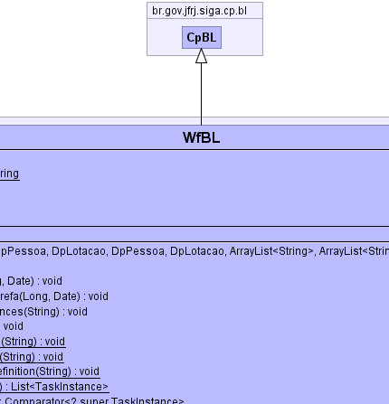
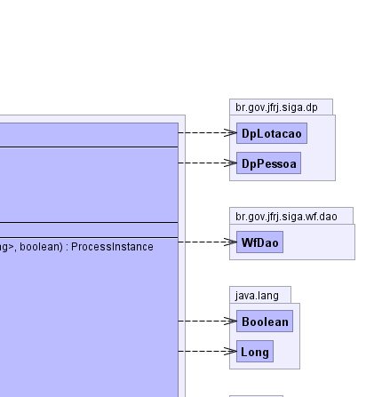
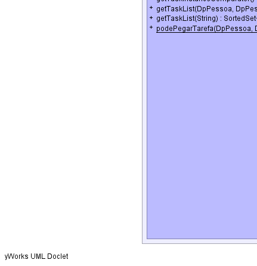
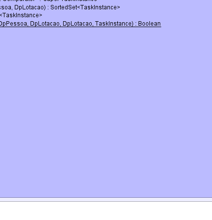
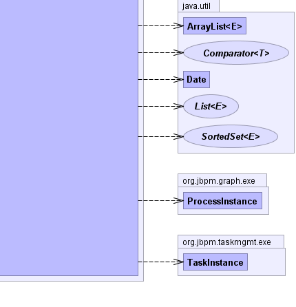

br.gov.jfrj.siga.cp.bl.CpBL
br.gov.jfrj.siga.wf.bl.WfBL
br.gov.jfrj.siga.cp.bl.CpBL
br.gov.jfrj.siga.wf.bl.WfBL
|
|||||||||
| PREV CLASS NEXT CLASS | FRAMES NO FRAMES | ||||||||
| SUMMARY: NESTED | FIELD | CONSTR | METHOD | DETAIL: FIELD | CONSTR | METHOD | ||||||||
java.lang.Object
public class WfBL
Classe que representa a lógica do negócio do sistema de workflow.
 |
 |  |
|  |  |  |
| Field Summary | |
|---|---|
private static TaskInstanceComparator |
tic
|
static java.lang.String |
WF_CADASTRANTE
|
static java.lang.String |
WF_LOTA_CADASTRANTE
|
static java.lang.String |
WF_LOTA_TITULAR
|
static java.lang.String |
WF_TITULAR
|
| Constructor Summary | |
|---|---|
WfBL()
|
|
| Method Summary | |
|---|---|
org.jbpm.graph.exe.ProcessInstance |
createProcessInstance(long pdId,
DpPessoa cadastrante,
DpLotacao lotaCadastrante,
DpPessoa titular,
DpLotacao lotaTitular,
java.util.ArrayList<java.lang.String> keys,
java.util.ArrayList<java.lang.String> values,
boolean fCreateStartTask)
Cria uma instância de processo. |
private WfDao |
dao()
|
void |
encerrarProcessInstance(java.lang.Long idProcessInstance,
java.util.Date dataFim)
Encerra uma process instance com uma data de fim específica. |
void |
encerrarProcessInstanceDaTarefa(java.lang.Long idTI,
java.util.Date dtFim)
Encerra o processo da tarefa especificada. |
void |
encerrarTodasProcessesInstances(java.lang.String nomeProcesso)
Finaliza todas as Processes Instances que estiverem abertas. |
void |
excluirProcessInstance(java.lang.Long idProcessInstance)
|
static void |
excluirTodasProcessInstances(java.lang.String nomeProcesso)
Exclui do banco de dados todas as instâncias do processo. |
private static void |
excluirTodosProcessDefinition(java.lang.String nomeProcesso)
Exclui TODAS as definições de processo (Process definition) do banco de dados. |
private static void |
excluirUltimaVersaoProcessDefinition(java.lang.String nomeProcesso)
Exclui a última versão da definição do processo (Process Definition) do banco de dados. |
private static java.util.List<org.jbpm.taskmgmt.exe.TaskInstance> |
getGroupTaskList(java.util.List<java.lang.String> actorIds)
|
java.util.Comparator<? super org.jbpm.taskmgmt.exe.TaskInstance> |
getTaskInstanceComparator()
|
java.util.SortedSet<org.jbpm.taskmgmt.exe.TaskInstance> |
getTaskList(DpPessoa cadastrante,
DpPessoa titular,
DpLotacao lotaTitular)
Retorna o conjunto de tarefas que estão na responsabilidade do usuário. |
java.util.SortedSet<org.jbpm.taskmgmt.exe.TaskInstance> |
getTaskList(java.lang.String siglaDoc)
|
static java.lang.Boolean |
podePegarTarefa(DpPessoa cadastrante,
DpPessoa titular,
DpLotacao lotaCadastrante,
DpLotacao lotaTitular,
org.jbpm.taskmgmt.exe.TaskInstance ti)
|
| Methods inherited from class br.gov.jfrj.siga.cp.bl.CpBL |
|---|
alterarCpModelo, alterarIdentidade, alterarSenhaDeIdentidade, appException, bloquearIdentidade, bloquearPessoa, cancelarIdentidade, configurarAcesso, criarIdentidade, definirSenhaDeIdentidade, getComp, podeAlterarSenha, setComp, trocarSenhaDeIdentidade |
| Methods inherited from class java.lang.Object |
|---|
clone, equals, finalize, getClass, hashCode, notify, notifyAll, toString, wait, wait, wait |
| Field Detail |
|---|
public static final java.lang.String WF_CADASTRANTE
public static final java.lang.String WF_LOTA_CADASTRANTE
public static final java.lang.String WF_TITULAR
public static final java.lang.String WF_LOTA_TITULAR
private static TaskInstanceComparator tic
| Constructor Detail |
|---|
public WfBL()
| Method Detail |
|---|
public org.jbpm.graph.exe.ProcessInstance createProcessInstance(long pdId,
DpPessoa cadastrante,
DpLotacao lotaCadastrante,
DpPessoa titular,
DpLotacao lotaTitular,
java.util.ArrayList<java.lang.String> keys,
java.util.ArrayList<java.lang.String> values,
boolean fCreateStartTask)
throws java.lang.Exception
pdId - cadastrante - lotaCadastrante - titular - lotaTitular - keys - values -
java.lang.Exception
public java.util.SortedSet<org.jbpm.taskmgmt.exe.TaskInstance> getTaskList(DpPessoa cadastrante,
DpPessoa titular,
DpLotacao lotaTitular)
throws AplicacaoException
AplicacaoExceptionprivate static java.util.List<org.jbpm.taskmgmt.exe.TaskInstance> getGroupTaskList(java.util.List<java.lang.String> actorIds)
public java.util.SortedSet<org.jbpm.taskmgmt.exe.TaskInstance> getTaskList(java.lang.String siglaDoc)
public static java.lang.Boolean podePegarTarefa(DpPessoa cadastrante,
DpPessoa titular,
DpLotacao lotaCadastrante,
DpLotacao lotaTitular,
org.jbpm.taskmgmt.exe.TaskInstance ti)
private WfDao dao()
public java.util.Comparator<? super org.jbpm.taskmgmt.exe.TaskInstance> getTaskInstanceComparator()
public void encerrarTodasProcessesInstances(java.lang.String nomeProcesso)
throws AplicacaoException
AplicacaoException
public void encerrarProcessInstance(java.lang.Long idProcessInstance,
java.util.Date dataFim)
throws AplicacaoException
idProcessInstance - dataFim -
AplicacaoExceptionpublic void excluirProcessInstance(java.lang.Long idProcessInstance)
public static void excluirTodasProcessInstances(java.lang.String nomeProcesso)
nomeProcesso - -
Nome do processo que terá suas instâncias excluídas.private static void excluirUltimaVersaoProcessDefinition(java.lang.String nomeProcesso)
nomeProcesso - -
Nome do processo.private static void excluirTodosProcessDefinition(java.lang.String nomeProcesso)
nomeProcesso -
public void encerrarProcessInstanceDaTarefa(java.lang.Long idTI,
java.util.Date dtFim)
throws AplicacaoException
idTI - dtFim -
AplicacaoException
|
|||||||||
| PREV CLASS NEXT CLASS | FRAMES NO FRAMES | ||||||||
| SUMMARY: NESTED | FIELD | CONSTR | METHOD | DETAIL: FIELD | CONSTR | METHOD | ||||||||